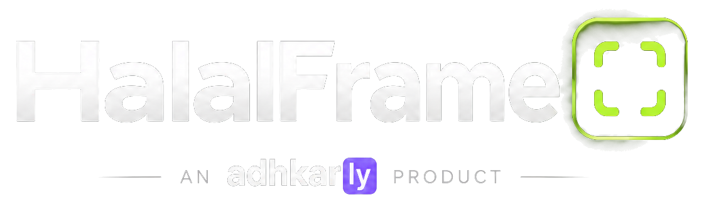

Private by design
Your photo or video remains in your browser tab. No accounts, servers, API keys or uploaded media. AI models must download once before detection works.

Preparing your private editor…
This project uses JavaScript modules, on-device AI and a service worker. Opening index.html directly from a file manager can block those features. Upload the ZIP contents to GitHub Pages or Netlify Drop and open the HTTPS address.
Your videos and photos will still stay on your device.
Mask people and selected regions at specific moments — and keep your media on your device.
Choose a local MP4, WebM, MOV, JPG, PNG or WebP file.
Daily adhkar, Qur'an, du'as and Islamic learning — built by the Adhkarly team.
Your photo or video remains in your browser tab. No accounts, servers, API keys or uploaded media. AI models must download once before detection works.
AI can miss a person, a frame or exposed awrah. Review everything manually. Nothing in this app guarantees religious compliance.